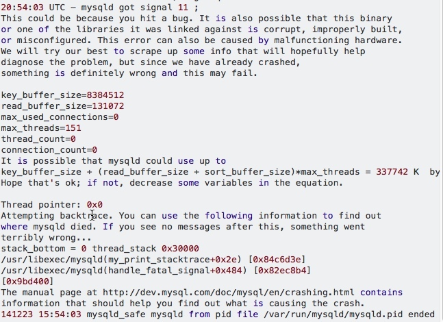

数据库非正常关闭导致无法启动问题
一、问题
上周五因为docker的原因导致服务器重启，重启后启动数据库报错，如下：

二、解决方法
1、删除log法(数据不重要或已经有备份，只需要恢复mysql启动)
删除ibdata*和ib_logfile*,保险起见可以先移到其他目录下，启动试试（我没有成功）。
2、改配置文件法(如果数据很重要且没有备份)
修改innodb_force_recovery参数，使mysqld跳过恢复步骤，将mysqld 启动,将数据导出来然后重建数据库。
innodb_force_recovery可以设置为1-6,大的数字包含前面所有数字的影响。
1. (SRV_FORCE_IGNORE_CORRUPT):忽略检查到的corrupt页。
2. (SRV_FORCE_NO_BACKGROUND):阻止主线程的运行，如主线程需要执行full purge操作，会导致crash。
3. (SRV_FORCE_NO_TRX_UNDO):不执行事务回滚操作。
4. (SRV_FORCE_NO_IBUF_MERGE):不执行插入缓冲的合并操作。
5. (SRV_FORCE_NO_UNDO_LOG_SCAN):不查看重做日志，InnoDB存储引擎会将未提交的事务视为已提交。
6. (SRV_FORCE_NO_LOG_REDO):不执行前滚的操作。
注意
a 当设置参数值大于0后，可以对表进行select,create,drop操作,但insert,update或者delete这类操作是不允许的。
b 当innodb_purge_threads 和 innodb_force_recovery一起设置会出现一种loop现象:
150125 17:07:42 InnoDB: Waiting for the background threads to start
150125 17:07:43 InnoDB: Waiting for the background threads to start
150125 17:07:44 InnoDB: Waiting for the background threads to start
150125 17:07:45 InnoDB: Waiting for the background threads to start
150125 17:07:46 InnoDB: Waiting for the background threads to start
150125 17:07:47 InnoDB: Waiting for the background threads to start
因此在my.cnf中修改以下两个参数:
innodb_force_recovery=6
innodb_purge_thread=0
重启mysql，立即对数据库做逻辑导出，完成之后将innodb_force_recovery设置为0 ，innodb_purge_thread=1 ,然后重建数据库。
2.1 在做逻辑导出时可能遇到如下错误
InnoDB: error: space object of table
show tables可以看到表存在，show create table xxx提示不存在，说明表坏了，需要重新建表，建表中可能依然会报doesn‘t exist，可以drop表试试(反正数据保不住了)，再create,成功
利用innodb_force_recovery 解决MySQL服务器crash无法重启问题
InnoDB: Error: Table "mysql"."innodb_table_stats" not found.
mysql无法启动由于innodb 导致修改 innodb_force_recovery